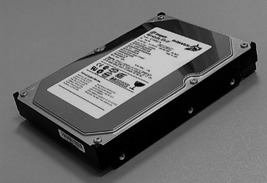
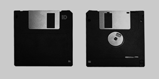
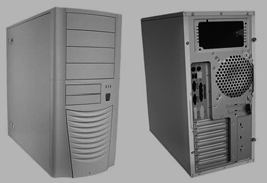

Perifèrics i comunicacions
A part dels components fonamentals, l’ordinador pot disposar d’una sèrie d’ampliacions que es coneixen habitualment com a perifèrics, si retallem l’expressió “dispositius perifèrics”. Aquests components de maquinari poden ser fonamentals per a la utilització de l’ordinador per part d’un usuari, com pot ser el cas d’un monitor de visualització, o poden ser simplement una ampliació que permet un ús més productiu del sistema informàtic, com per exemple el ratolí.
De fet, els perifèrics són aquells dispositius que, tot i formar part de l’ordinador, es troben fora del contenidor principal (anomenat caixa o torre), malgrat que en ordinadors de tipus compacte, com per exemple els portàtils, aquests ja es troben integrats en el sistema. Per tant, el concepte “perifèric” fa referència no tant a la posició física d’un component com a la seva situació lògica respecte al bus principal del sistema. En certa manera, tot allò que no sigui la unitat de procés central i la memòria principal i el bus del sistema és considerat perifèric. En alguns casos també es consideren perifèrics els dispositius de memòria secundària (per exemple, el disc dur).
Els perifèrics són aquells dispositius que formen part del maquinari d’un sistema informàtic i amplien les funcionalitats dels components fonamentals: CPU, memòria principal i bus del sistema.
Es pot considerar la part central de l’ordinador la que es troba dintre de la carcassa o caixa i un usuari rarament veu. La resta de dispositius externs a aquesta carcassa que formen el sistema informàtic se solen anomenar perifèrics.
Així, doncs, a la part central o interna d’un ordinador trobem, com a elements més importants, els següents:
- La carcassa
- La font d’alimentació
- La placa base
- El processador
- La memòria
- El disc dur
- La disquetera
- Els lectors i gravadors de CD i DVD
- La targeta gràfica
- La targeta de so
- La targeta de xarxa
- El mòdem intern
Fora de la carcassa, trobarem els elements externs o perifèrics. De perifèrics n’hi ha de molts tipus, depenent de les necessitats. Els perifèrics imprescindibles en els sistemes informàtics actuals són els següents:
- Monitor
- Teclat
- Ratolí
Hi ha diverses classificacions per a organitzar els tipus de perifèrics. La més habitual és la següent:
- Perifèrics d’entrada. Perifèrics que permeten introduir dades des de l’exterior de l’ordinador cap a la part central. Són exemples de perifèrics d’entrada els següents:
- Teclat
- Ratolí
- Micròfon
- Escàner
- Càmera web
- Perifèrics de sortida. Perifèrics que permeten extreure dades des de l’interior de l’ordinador o part central cap a l’exterior o usuari. Són exemples de perifèrics de sortida els següents:
- Monitor
- Altaveus
- Auriculars
- Impressora
- Perifèrics d’entrada/sortida. Perifèrics que permeten introduir i extreure informació de l’ordinador. Com a exemple de perifèric d’entrada/sortida es podria esmentar la pantalla tàctil, que visualitza la informació a la vegada que permet introduir-ne de nova per mitjà de les pulsacions.
El concepte de perifèric es pot considerar de manera àmplia, i es poden incloure també entre els perifèrics els dispositius d’emmagatzematge no primari (com els discos durs, disquets o discos òptics), els dispositius de comunicació (com ara les targetes de xarxa o els mòdems) i els elements de comunicació (com les targetes de so o les targetes gràfiques). En aquest sentit més ampli, un perifèric és un dispositiu o component que s’afegeix a l’ordinador per a afegir funcionalitats addicionals a les bàsiques.
- Perifèrics d’emmagatzematge. Serveixen per a desar dades i informació per un temps llarg, al contrari que la memòria de treball:
- Disc dur
- Disquetera
- Discos òptics
- Memòria USB
- Lector de targetes
- Perifèrics de comunicació. Són aquells que s’encarreguen de comunicar-se amb altres màquines o ordinadors, per a treballar en conjunt o simplement per a enviar i rebre informació:
- Targeta Ethernet
- Mòdem
- Targeta inalàmbrica
El disc dur
Els discos durs són uns discos magnètics amb una gran capacitat d’emmagatzematge que, generalment, són instal·lats a l’interior de l’ordinador. Els discos durs implementen un sistema de memòria no volàtil (la informació es conserva una vegada es desconnecten del corrent elèctric).
- 
- Disc dur
Els discos durs es coneixen també amb el terme anglès hard disk o les abreviacions HD o HDD (hard disk drive).
Estructura interna d'un disc dur
Un disc dur està constituït, bàsicament, pels elements següents:
- Una carcassa que protegeix les parts internes.
- Un o diversos plats amb la superfície de material magnetitzable.
- Un motor que fa girar tots els plats alhora.
- Una sèrie de capçals lectors subjectats per braços per a accedir als plats.
- També sol incorporar, com a mínim, un circuit imprès que fa les tasques de controlador de disc.
Els discos durs estan organitzats de la manera següent (vegeu la figura):
- Cada plat del disc té dues cares. Cada cara es divideix en cercles concèntrics anomenats pistes o tracks.
- S’anomena cilindre un conjunt de pistes alineades en els diversos discos.
- Cada pista conté diversos sectors. Un sector conté 512 bytes.
Els sistemes de fitxers poden definir un clúster com el nombre mínim de sectors seleccionables, és a dir, el nombre mínim d’informació que es pot llegir o escriure en bloc. Si es defineixen clústers molt grans s’optimitzen les operacions de lectura i escriptura, però se sol perdre força espai, ja que qualsevol fitxer s’haurà d’incloure en un nombre enter de clústers, i l’espai no usat en el seu interior es perd.
La densitat de gravació és la quantitat de dades emmagatzemada per unitat de superfície. Així, doncs, per a augmentar la densitat de gravació hi ha dues possibilitats: disminuir la distància entre pistes o bé augmentar el nombre de bits dintre d’un sector.
Característiques dels discos
Un disc dur se sol caracteritzar pels elements següents:
- Capacitat. Quantitat d’informació que pot contenir (per exemple 120 GB).
- Dimensions. Habitualment, els discos són de 3,5 polzades, tot i que en ordinadors portàtils solen ser de 2,5 polzades.
- Nombre d’operacions d’E/S per segon. Els valors típics són de prop de 50 operacions d’E/S aleatòries. Les operacions seqüencials poden ser moltes més, ja que no cal localitzar la dada per transferir.
- Velocitat de rotació. Normalment, velocitat angular, per exemple revolucions per minut (rpm). Això implica que, en els sectors de les pistes més externes, els capçals recorreran més distància per unitat de temps, per exemple 7.200 rpm. Com més velocitat de rotació, més energia i més calor es desprèn.
- Nombre de sectors absoluts, o bé nombre de pistes i nombre de sectors per pista.
- Temps de cerca (seek time). Temps que triga un capçal a trobar la pista que conté la informació demanada. Aquest temps depèn del lloc on sigui el capçal en el moment de la petició. Si és en una pista molt propera, el seek time és relativament petit (un o dos mil·lisegons), altrament triga fins a 15 mil·lisegons.
- Latència (rotational delay). Una vegada seleccionada la pista, el temps que comporta localitzar el sector concret és la latència (aquest temps pot ser d’uns 2 mil·lisegons). Com més velocitat de rotació del disc, menys latència.
- Temps mitjà d’accés. Mitjana de la suma del temps de cerca més la latència.
- Temps de transferència. Mesura, en megabits per segon (Mbps), la capacitat de llegir sectors i transferir-los a la controladora o memòria cau.
Format i particions
El format del disc és la manera en què s’organitzaran les dades en aquest. Hi ha dos tipus de format, el físic i el lògic.
El format físic consisteix a dividir el disc en sectors de 512 bytes cadascun. Aquest format se sol fer, si cal, mitjançant el BIOS.
El format lògic consisteix a incorporar l’estructura en el disc per al sistema de fitxers i el sector d’engegada o boot sector, que contindrà la informació mínima per a engegar un sistema operatiu o aplicació instal·lats en aquest.
Els sistemes de fitxers solen estar associats a un sistema operatiu; els sistemes operatius Windows solen usar sistemes de fitxers de tipus FAT16, FAT32 o NTFS, mentre que els sistemes operatius Linux solen usar sistemes de fitxers com ara ext3 o ext4.
Un disc dur es pot particionar en unitats més petites, i cada partició es pot formatar amb un sistema de fitxers diferent. Una partició és l’establiment de divisions lògiques en un disc dur, normalment per a instal·lar-hi diversos sistemes operatius, o bé per a organitzar les dades amb unitats lògiques diferenciades.
Tradicionalment, en l’MS-DOS i el Windows hi ha la limitació de quatre particions de tipus primari (en què cadascuna pot contenir un únic sistema operatiu), tot i que en un moment determinat, només pot estar-ne activa una (la partició “per defecte”). Hi pot haver, però, altres particions anomenades particions esteses. Les particions esteses poden contenir una o diverses particions lògiques.
Estàndards d'interfícies i de control
Els discos durs es connecten a les interfícies de la placa base preparades per a allotjar-los. Associades a aquestes interfícies, hi ha uns estàndards de sistemes de control. Els estàndards següents són els més comuns:
- IDE (integrated device electronics). És un sistema de connexió per a dispositius d’emmagatzematge basat en ATA (advanced technology attachment) o Parallel ATA. Els discos durs es connecten a les interfícies de 40 pius que els permeten la transmissió de les dades i del control, i per uns cables d’alimentació provinents de la font d’alimentació
- SCSI (small computer system interface). Es tracta d’un sistema d’alt rendiment que, normalment, es fa servir per a discos durs de servidors. És més car que el sistema IDE.
- S-ATA o Serial ATA. Proporciona una velocitat més elevada de transmissió que el sistema Parallel ATA. Té la capacitat de connectar els discos “en calent” (una vegada l’ordinador ja està engegat) i permet connectar fins a set o quinze dispositius S-ATA. És compatible amb IDE.
Es recomana consultar la secció “Recursos de contingut” del material web per a identificar els cables connectors de cadascun d’aquests tipus de connexió.
Modes de transferència
Hi ha diversos sistemes per a fer la transferència de dades del disc dur al processador o memòria. La implementació d’una o altra depèn, bàsicament, de la capacitat del BIOS i del joc de xips de la placa base d’adoptar aquests mètodes:
- PIO (programmed input/output). Sistema en el qual és el processador l’encarregat de controlar les peticions de lectura/escriptura en disc. És un sistema molt lent i poc eficient que requereix que la CPU destini molt de temps a aquest tipus d’operacions i al seu control.
- DMA (direct memory access). El seu ús està condicionat a la presència d’aquesta característica en el joc de xips de la placa base. En aquest cas, es transfereixen les dades des del disc a la memòria o viceversa sense que hi intervingui el processador. El controlador de la DMA és el que gestiona la transferència.
- Ultra DMA. Sistema que millora l’anterior. Exemples d’aquest tipus són ATA-6 i ATA-7.
Els principals fabricants (Seagate, Iomega, Western Digital) ofereixen discos durs amb capacitats ja habituals de centenars de gigabytes.
- Block mode. Sistema que consisteix a agrupar diverses operacions de lectura o escriptura per a controlar-les conjuntament. Comporta una millora en el rendiment. Aquesta característica s’ha d’activar (en cas de ser suportada) mitjançant el BIOS.
Memòria cau de disc
La majoria de discos disposen de sistemes de memòria cau per a millorar els temps d’accés als sectors. Així, en aquestes memòries cau, es pot emmagatzemar el que es preveu que se sol·licitarà en un futur immediat, i també la cua d’escriptures pendents en disc.
Aquestes memòries cau poden estar incorporades en el disc dur mateix, en targetes a part, o poden fer ús de la memòria principal per a aquesta finalitat.
La disquetera
La disquetera és la unitat per a la lectura i escriptura de disquets o discos flexibles. La disquetera també es coneix per les sigles FDD (floppy disk drive).
- 
- Disquet de 3,5 polzades
Un disquet (floppy disk, en anglès) és un disc magnètic de material flexible, de petites dimensions, tancat en una funda, magnetitzable per les dues bandes.
Els disquets permeten emmagatzemar informació de manera no volàtil (no s’esborra si no hi ha corrent) i off-line o esborrable (mitjans d’emmagatzematge de dades que han de ser introduïts en el dispositiu lector de l’ordinador per a poder ser llegits, a diferència dels dispositius d’emmagatzematge intern, com ara els discos durs).
S’han estandarditzat dos formats de disquets al llarg de la història:
- De 5,25 polzades
- De 3,5 polzades
Actualment, els primers estan en desús, i els segons s’estan substituint per altres tipus d’emmagatzematge, com ara discos òptics o memòries USB o flaix.
L’estructura interna d’un disquet s’organitza, de la mateixa manera que en els discos durs, en pistes (cercles concèntrics) i sectors (seccions de cercle). Els disquets encara utilitzats actualment són els de 3,5 polzades d’alta densitat (HD) amb una mida de 1,44 MB.
Discos òptics
Els discos òptics són suports d’informació de gran capacitat formats per superfícies circulars de policarbonat en què la informació s’emmagatzema perforant la superfície plana.
La informació s’emmagatzema en una espiral que cobreix tota la superfície del disc, i que va de la part interior a l’exterior.
La densitat de bits per unitat de superfície és idèntica en tot el disc, i la velocitat de lectura de bits també és constant; per tant, la velocitat de rotació angular no serà constant, ja que per a llegir la part interior del disc s’haurà de fer girar més ràpid.
La informació es llegeix aprofitant les propietats opticoreflectives de la incisió de la llum làser en la superfície perforada.
Tipus de discos òptics
Hi ha dos tipus principals de discos òptics usats habitualment en els sistemes informàtics, els quals es divideixen en diversos subtipus depenent de la funció per a la qual es vulguin utilitzar. Els més comuns en informàtica són els següents:
- CD (compact disc):
- CD-ROM (compact disc-read only memory). Disc òptic de només lectura (escrit durant la fabricació).
- CD-R (compact disc-recordable). Disc gravable, una única vegada (s’hi pot escriure per l’acció d’un feix làser).
- CD-RW (compact disc-rewritable). Disc reenregistrable (s’hi pot escriure diverses vegades).
- DVD (digital versatile disc):
- DVD-ROM (digital versatile disc-read only memory). Successors dels CD-ROM (escrits durant la fabricació).
- DVD-R (digital versatile disc recordable). Gravable, una única vegada.
- DVD+R. Com els DVD-R però creats per una altra aliança de fabricants.
- DVD-RW (digital versatile disc rewritable). Disc reenregistrable (s’hi pot escriure diverses vegades).
- DVD+RW. Igual que els DVD-RW però creats per una altra aliança de fabricants.
Externament, tots aquests discos presenten un aspecte similar: són discos òptics, majoritàriament de 12 cm de diàmetre.
La diferència més important entre els CD i els DVD és la quantitat d’informació que s’hi pot emmagatzemar. En els DVD, s’ha disminuït la distància entre pistes i la distància entre bits, i això ha fet que es puguin emmagatzemar en el mateix espai físic (12 cm de diàmetre) molts més bits. Mentre que els CD solen emmagatzemar uns 800 MB, tot i que hi ha variants, els DVD solen emmagatzemar 4,7 GB (els d’una sola cara i capa).
Entre les tecnologies DVD es poden distingir les següents:
- DVD d’una cara.
- DVD de dues cares (amb informació per les dues cares).
- DVD d’una capa (la informació està escrita en forma d’espiral en una sola dimensió).
- DVD de dues capes (la informació està escrita en dues capes diferents, com en dues superfícies superposades. L’enfocament de la lent làser és el que permet obtenir la informació de cadascuna de les cares). Aquesta tecnologia dobla la capacitat de la cara.
Aleshores, comercialment, es poden trobar DVD de diversos formats:
- DVD-5: DVD d’una sola cara i una sola capa
- DVD-9: DVD d’una sola cara i doble capa
- DVD-10: DVD de doble cara i una sola capa per cara
- DVD-18: DVD de doble cara i doble capa a cada cara
En ordinadors actuals és possible ja trobar unitats de Blu-ray Disk (el nom fa referència al làser blau utilitzat per a la lectura/escriptura). Es tracta d’un format de disc òptic amb el mateix format físic que el CD o el DVD. Ha estat creat per a l’emmagatzematge de vídeo d’alta definició o grans quantitats de dades. La seva capacitat arriba fins als 50 GB. Hi ha en estudi suports fins a 400 GB.
Els formats actuals són els següents:
- Blu-ray d’una capa: 25 GB.
- Blu-ray de doble capa: 50 GB.
Aquest format es va imposar al seu competidor (l’HD DVD) en la guerra de formats per a convertir-se en el successor del DVD, encara que actualment el DVD encara és majoritari.
Tipus de dispositius de lectura/escriptura de discos òptics
Hi ha diferents dispositius que permeten accedir a la informació d’aquests discos òptics:
- Lectors de CD
- Lectors de DVD
- Gravadors de CD (que inclouen la lectura de CD)
- Gravadors de DVD (que inclouen la lectura de DVD)
- Lectors de Blu-ray
- Gravadors de Blu-ray (que inclouen la lectura de CD i DVD).
Actualment, se solen oferir totes les funcions o algunes (lectura i escriptura de CD i de DVD) en un únic dispositiu lector/gravador d’aquests diversos formats. Així, es disposa de dispositius com ara els següents:
- Lectors de CD i DVD (que tenen dos capçals, un per a llegir CD i l’altre per als DVD).
- Lectors de Blu-ray, DVD i CD.
- Gravadors (i lectors) de CD i DVD.
- Gravadors de Blu-ray (compatibles amb CD i DVD).
Totes les unitats actuals són capaces d’enregistrar dades en suports gravables (un cop) com CD-R o DVD-R i regravables (diversos cops) com el CD-RW o el DVD-RW. Això inclou els discs Blu-ray regravables que, malgrat el seu elevat preu, es troben disponibles en el mercat.
Unitats basades en memòria flaix
La memòria flaix és un tipus d’emmagatzematge desenvolupat a partir de la memòria EEPROM (electrically erasable programmable read only memory) que permet múltiples lectures i escriptures en un dispositiu no volàtil.
És un tipus de memòria molt resistent als cops, de baix consum i silenciosa, ja que no conté motors o parts mòbils com els discs magnètics tradicionals. A més, la seva mida petita ha propiciat la proliferació de formats d’emmagatzematge portàtils basats en aquesta tecnologia. Com a inconvenient podem trobar que el nombre de vegades que es pot escriure i esborrar és limitat, i pot arribar a nombres entre 10.000 i un milió de cops, depenent del procés de fabricació i altres factors.
Els tipus de dispositius d’emmagatzematge més freqüents basats en aquest format són:
- Memòria USB: (universal serial bus). També coneguda com a llapis de memòria. És un dispositiu portàtil de mida compacta (com un clauer) que pot emmagatzemar actualment fins a 256 GB en algun model. S’han convertit en el sistema d’emmagatzematge i transport personal de dades més utilitzat, i ha desplaçat definitivament els disquets flexibles, però també els formats òptics com CD o DVD. Es tracta de dispositius plug & play (‘endollar i llest’) que reconeixen gairebé tots els sistemes operatius actuals sense necessitat de controladors afegits.
- Targetes de memòria: És també un dispositiu en forma de petita targeta de dades. S’ha popularitzat a partir de les càmeres digitals, però s’ha estès a altres dispositius com les càmeres de vídeo, PDA, reproductors multimèdia o telèfons mòbils. Conviuen múltiples formats (Compact Flash, Secure Digital, xD-Picture Card…) en diverses mides i capacitats, que arriben fins als gigabytes en alguns casos. Per a poder llegir-les en un ordinador personal cal disposar d’un lector de targetes que habitualment és capaç de reconèixer-ne múltiples tipus (són habituals els que en llegeixen 16 tipus diferents).
- Unitats d’estat sòlid: (SSD, de l’anglès solid state drive). Aquest dispositiu en format de disc dur utilitza memòria no volàtil com la flaix per a emmagatzemar dades en lloc del suport magnètic amb plats i capçal dels discos habituals. El fet de no tenir parts mòbils redueix molt el temps de cerca, la latència i altres paràmetres vitals d’un suport d’aquest tipus. A més, és més immune a les vibracions externes i als cops, de manera que s’ha estès molt el seu ús per a ordinadors portàtils, sobretot del tipus UMPC (ultra mobile PC) que solen tenir fins a 10 polzades de pantalla.
En general s’ha estès molt l’ús dels dispositius basats en memòria flaix, gràcies a la facilitat de transport i a la immunitat contra pols, ratllades, etc. –enfront d’altres dispositius d’emmagatzematge, com els disquets, CD o DVD–, a la velocitat d’accés que ofereixen, i al nombre i flexibilitat d’escriptures que permeten.
La targeta gràfica
Una targeta gràfica, també coneguda com a targeta de vídeo i, de vegades, com a adaptadora de pantalla, és una targeta d’expansió (tot i que, cada vegada més sovint, ja es troba integrada a la placa base) que s’encarrega de processar les dades per a fer-les visibles en el monitor o pantalla.
Anteriorment, era el processador el que s’encarregava de gestionar el processament de la informació per a poder visualitzar-la, però, actualment, a causa de la complexitat creixent dels sistemes gràfics, aquesta funció s’ha hagut d’especialitzar.
Algunes targetes gràfiques actuals, a banda del tractament pròpiament dit dels gràfics, ofereixen funcionalitats addicionals com ara la captura de vídeo, sintonització de televisió i descodificació de MPEG-2 i MPEG-4.
Conceptes importants per a gràfics
Associada a les targetes gràfiques, hi ha tota una sèrie de conceptes de gràfics que cal conèixer per a comprendre millor els elements d’aquesta tecnologia. Els més importants són els següents:
- Píxel (picture element). És la unitat mínima d’informació gràfica. Una pantalla està formada per milers o milions de píxels o petits punts.
- Resolució de la pantalla. Nombre de píxels que es mostren en la pantalla, expressat en píxels horitzontals per píxels verticals. Són resolucions típiques 800×600 o 1.024×768.
- Profunditat de color (o bits per píxel). El nombre de bits que es necessiten per a representar un píxel condiciona el nombre total de colors disponibles per a aquest píxel. Per exemple, si es destinen 16 bits, es poden representar 65.000 colors, però amb 24 bits se’n poden representar 16,7 milions, la qual cosa permetrà representar una imatge més real.
- Freqüència de refresc. Nombre de vegades per segon que s’actualitza o repinta la pantalla. Són valors habituals 60 Hz, 75 Hz i 100 Hz. Com més freqüència de refresc, menys parpelleig en la pantalla.
Components de la targeta gràfica
Una targeta gràfica integra diverses parts, cadascuna amb la seva funció específica:
- GPU (graphics processing unit) o VPU (visual processing unit). És el processador de la targeta gràfica. Es tracta d’un processador que es dedica exclusivament a tasques gràfiques i que permet alliberar el processador principal de l’ordinador d’aquestes tasques feixugues, sobretot del tractament de gràfics de 3D, que comporta l’execució de complexos algoritmes geomètrics i gràfics.
- Memòria de vídeo. Memòria destinada a emmagatzemar la informació necessària per al processament gràfic. Sol ser de tipus DDR.
- Z-buffer. Part de la memòria de vídeo dedicada a emmagatzemar informació sobre les coordinades de profunditat, per als problemes de visibilitat. A més de memòria destinada a aquesta tasca, s’aconsegueix augmentar la qualitat de la imatge.
- Video BIOS. És el microprogramari que conté el programari bàsic de la targeta gràfica.
- RAMDAC (random access memory digital-to-analog converter). Convertidor digital-analògic. Permet obtenir senyal analògic acceptable per als monitors analògics.
- Ports de sortida. Interfícies de connexió amb els perifèrics lligats a la targeta gràfica:
- SVGA (super video graphics array). Per a monitors analògics.
- DVI (digital visual interface). Per a pantalles digitals.
- S-Video (separate video). Port per a donar suport a televisors, reproductors de DVD domèstics… Ofereix senyal analògic.
Hi ha diversos fabricants de targetes gràfiques. N’hi ha que fabriquen la GPU i n’hi ha que només integren els components a la placa.
- Ventilador o dissipador. Dispositiu refrigerant que procura disminuir l’escalfor que genera la targeta gràfica, per a evitar errades o avaries a causa de l’elevada temperatura. El ventilador és mecànic i mòbil, i el dissipador és passiu. Poden estar presents a la targeta gràfica per separat i també conjuntament.
Les interfícies de comunicació amb la placa base més típiques per a targetes gràfiques són les següents:
- AGP (accelerated graphics port). Proporciona, respecte al bus PCI, un mitjà d’alta velocitat per a accelerar el processament dels gràfics 3D. Actualment, el sistema PCI Express està deixant obsolet aquest tipus de busos.
- PCI Express (també conegut com a PCIe o PCIX, i com a 3GIO, de 3rd Generation I/O). Sistema de bus en sèrie que ofereix unes prestacions de velocitat superiors als busos anteriors. Connecta punt a punt els dispositius PCIe amb els ports de la placa base. Es preveu que substitueixi els busos anteriors. Sovint es considera un híbrid entre bus en sèrie i en paral·lel, ja que sol agrupar diverses línies o lanes per a crear interconnexions de velocitat més alta. Aquestes interconnexions es coneixen amb el multiplicador que les origina: x1, x4, x8, x16.
Podeu consultar els webs d’alguns dels principals fabricants de targetes gràfiques en la secció “Adreces d’interès” del web del mòdul.
La targeta de so
Una targeta de so és una targeta d’expansió (tot i que, darrerament, sol estar integrada en la placa base) que permet enviar i rebre so.
Amb el desenvolupament de continguts multimèdia, les targetes de so, juntament amb les gràfiques, s’han fet protagonistes. De processar un so bàsic, han passat a suportar so 3D i a admetre quatre altaveus i un subwoofer, per a assolir un so cada vegada més real per a videojocs i tot tipus de programari i documents multimèdia.
Les targetes de so professionals són un tipus especial de dispositiu optimitzat per al funcionament en temps real (o almenys amb baixa latència). Habitualment utilitzen controladors que segueixen el protocol professional ASIO (audio stream input output).
Aquestes targetes es descriuen també com a “interfícies d’àudio” i molts cops tenen la forma de dispositius externs USB 2.0 o FireWire, per a donar velocitats de transferència prou alta. Una part important és la quantitat de connectors d’entrada i sortida de què disposin (per a connectar altaveus o micròfons), i també les velocitats de mostreig de so elevades (normalment 96 kHz a 24 bits). Les característiques més enfocades a l’àudio domèstic, com el suport de so envoltant, no es consideren importants en aquest cas.
Components
- Un dels principals components de les targetes de so és el DAC (digital to analogue converter), que converteix els senyals digitals a analògics (ones de so) per a poder-los reproduir. El so digital sol usar DAC multicanal, que permet, fins i tot, sintetitzar so.
- Nombre de connectors: Les targetes domèstiques tenen almenys una entrada de micròfon i dos sortides (una de línia i una per a auriculars) encara que la major part de targetes actuals tenen més connectors. El connector és gairebé sempre de tipus mini-jack.
- Polifonia: Es refereix al nombre de canals de so que es capaç de reproduir la targeta a la vegada; les targetes actuals poden fer la mescla de diversos canals abans d’arribar al DAC, encara que només n’hi hagi un.
Connectors
Els connectors que ofereixen les targetes de so actuals solen consistir en jacks (estèreo de 3,5 mm) de diversos colors, que segueixen l’estàndard PC 99 creat per Microsoft i Intel, i que consisteix en la codificació de colors depenent de la funció de cada connector. Així, els més habituals són els següents:
- Verd (lime green). Sortida de so analògica estèreo, típicament usada per als altaveus o auriculars.
- Rosa (pink). Per a entrada de so analògica provinent del micròfon.
- Blau (light blue). Entrada auxiliar de so.
- Negre (black). Sortida analògica per a altaveus del darrere.
- Gris (silver). Sortida analògica per a altaveus laterals.
- Taronja (orange). Interfície S/PDIF digital. De vegades s’utilitza com a sortida per a altaveus centrals o subwoofer.
Principals fabricants
Un dels referents en la fabricació de targetes de so és Creative Technology, que va crear el producte Sound Blaster, que es va convertir durant anys en estàndard de facto. Realtek també és un important fabricant de targetes de so.
Interfícies amb la placa base
Actualment, si la targeta de so no està integrada a la placa base, se sol utilitzar una d’aquestes dues interfícies per a connectar-n’hi una:
- PCI
- PCI Express
Podeu consultar els webs de Creative i Realtek en la secció “Adreces d’interès” del web del mòdul.
Les targetes professionals utilitzen en molts casos el connector USB, FireWire o fins i tot interfícies òptiques.
En equips portàtils es poden trobar també models amb el connector PC Card.
La targeta de xarxa
La targeta de xarxa o NIC (network interface controller) és una targeta d’expansió –tot i que cada vegada més es troba integrada en les plaques base– que ofereix connexió a una xarxa d’ordinadors per a permetre la comunicació entre tots.
Les targetes de xarxa implementen les funcionalitats de les capes 1 i 2 del model OSI (open system interconnection) de xarxes. Proporcionen control físic, accés d’enllaç i adreçament MAC (media access control).
Institute of Electronics and Electrical
L’IEEE (Institute of Electronics and Electrical) és una organització que defineix els principals estàndards en què es basen les xarxes actuals.
Hi ha diferents tipus de targetes de xarxa depenent del tipus i medi de connexió i dels protocols emprats. Actualment, les targetes de xarxa més habituals són les següents:
- Targetes Ethernet, basades en l’estàndard IEEE 802.3.
- Targetes sense fil o wireless, que implementen els estàndards IEEE 802.11b i IEEE 802.11g.
Targetes Ethernet
Una targeta de xarxa Ethernet, si no està integrada a la placa base, sol disposar d’una interfície de connexió amb la placa base de tipus PCI.
El connector sol ser de tipus RJ45 per a connectar-hi jacks com ara terminacions dels cables de parells trenats de tipus, habitualment, UTP de categoria 5e o 6. El connector RJ45 és similar al que s’utilitza en la línia telefònica bàsica.
Podeu consultar els webs d’alguns dels principals fabricants de targetes de xarxa en la secció “Adreces d’interès” del web del mòdul.
Aquest tipus de targetes de xarxa poden oferir velocitats de transmissió de 10 Mbps o, més típicament, de 100 Mbps. Actualment, ja s’ofereixen també targes Ethernet de tecnologia Gigabit Ethernet (que ofereixen velocitats de 1.000 i 10.000 Mbps).
Targetes sense fils
Una targeta de xarxa sense fils és capaç de connectar-se a una xarxa basada en ones de ràdio en lloc de funcionar sobre un suport cablejat.
Les targetes sense fil que no estan integrades en la placa base poden ser de dues menes:
- Targetes sense fil amb connexió PCI (targetes internes).
- Adaptadors sense fil amb connexió USB (adaptadors externs), d’aspecte semblant al d’un llapis USB.
- Adaptadors sense fil amb connexió PC Card (o PCMCIA).
- Adaptadors sense fil amb connexió Mini PCI/PCI Express.
Aquestes targetes utilitzen una antena per a comunicar-se amb un punt d’accès o un altre ordinador mitjançant microones. El rang depèn de la targeta però habitualment en l’entorn domèstic és de vora 10/20 metres en interior i uns quatre cops més en exterior.
El mòdem
Els mòdems s’utilitzen per a fer possible la comunicació en xarxa per la xarxa de telefonia.
Els mòdems actuals solen oferir funcionalitats addicionals, com ara el marcatge automàtic, mètodes de compressió i correcció de dades, utilitats de FAX, etc.
Solem distingir dos tipus de mòdems:
- Mòdems interns. Integrats en la placa base o connectats per una ranura (normalment PCI) a aquesta.
- Mòdems externs. Dispositius perifèrics (externs a la carcassa) que es connecten per un port. És habitual que aquests mòdems ofereixin una connexió de tipus USB o COM (port en sèrie). Per a portàtils, solen ser de PC Card.
Els estàndards o normes que governen el funcionament dels mòdems són les recomanacions estructurades per la UIT-T (Unió Internacional de Telecomunicacions). Les diferents recomanacions són aquestes: V.32, V.32 bis, V.34, V.90 (que permet transmissions de 56 Kbps) i V.92 (que millora l’anterior).
La majoria de fabricants de mòdems solen disposar d’un conjunt d’ordres estàndard anomenat ordres Hayes.
Finalment cal destacar els mòdems ADSL, que s’utilitzen per a fer possible la comunicació en xarxa per mitjà de les línies ADSL.
Monitor
El monitor és el principal perifèric de sortida de l’ordinador.
Un monitor consisteix en una pantalla que presenta la informació a l’usuari per tal que aquest pugui interaccionar amb l’ordinador.
Una de les principals característiques dels monitors és la mida. Aquesta es basa en la mesura de la diagonal de la pantalla. Les mides se solen donar en polzades. Així, tenim monitors de 15″, 17″, 19″ i 21″.
La mida dels píxels (o unitat mínima de representació) és una de les característiques més importants d’un monitor. Com més petits siguin els píxels, més precises resultaran les resolucions de les imatges.
La freqüència de refresc (nombre de vegades per segon en què s’il·lumina la pantalla) també és un valor important, ja que a freqüències massa baixes l’usuari pot percebre un parpelleig. Són valors habituals 60 Hz, 70 Hz o 75 Hz.
Els dos tipus de monitors més estesos actualment són els següents:
- Monitors CRT (cathode ray tube). Pantalles que disposen d’un tub de rajos catòdics que projecta feixos d’electrons contra els diferents punts de la pantalla de fòsfor; aquests s’il·luminen per a crear finalment la imatge.
- Monitors LCD (liquid crystal display). També anomenats TFT (thin film transistor), que van guanyant terreny a mesura que en disminueix el cost de fabricació, ja que tenen una dimensió de profunditat molt menor que els CRT i un consum inferior.
Teclat
El teclat és un perifèric d’entrada que permet, juntament amb el ratolí, introduir la majoria de la informació bàsica per a poder utilitzar un ordinador. El terme anglès amb què es coneix el teclat és keyboard.
Una manera més simple de definir el teclat és com un conjunt de tecles que inclouen lletres, nombres, símbols i funcions, que es poden prémer per a introduir ordres i dades a l’ordinador.
Hi ha diferents tipus de teclats i diferents classificacions. En primer lloc, es poden classificar segons la disposició i el tipus de tecles. La distribució més habitual a casa nostra és la qwerty, que pren el nom de les primeres sis tecles superiors (per sota dels nombres) començant per l’esquerra. A part de les tecles típiques del teclat qwerty estàndard, en solem trobar incorporades d’altres, com les que reprodueixen accents, la ç o la ñ.
D’altra banda, és típic disposar d’un bloc numèric en els teclats dels ordinadors, sobretot en els no portàtils. Es tracta d’un teclat de tipus estès de 102 tecles.
Els teclats actuals se solen comunicar amb l’ordinador d’alguna d’aquestes maneres:
- Connector PS/2
- USB
- Sense fil (per radiofreqüència, infrarojos o Bluetooth)
Ratolí
El ratolí és un perifèric d’entrada que permet, juntament amb el teclat, introduir la major part d’informació bàsica per a poder utilitzar un ordinador en entorns de programari visual. El terme anglès amb què es coneix el ratolí és mouse.
El ratolí proporciona dades de posició en dues dimensions, que normalment són representades en el monitor a mode de retroacció amb un punter.
El ratolí s’utilitza amb una sola mà, i acostuma a tenir dos o tres botons que es poden pitjar, normalment per a seleccionar alguna acció en aquella posició determinada. Es poden pitjar o prémer els botons del ratolí amb una sola pulsació (clic) o amb una doble pulsació (doble clic). De vegades, els ratolins també incorporen una rodeta per a facilitar el moviment vertical per pàgines o pantalles llargues.
Hi ha diferents tipus de ratolins, depenent de la tecnologia que els implementi:
- Ratolins mecànics. Incorporen una bola de plàstic que fa moure unes rodes que capturen la posició relativa.
- Ratolins òptics. Determinen la posició gràcies a un sensor òptic.
- Ratolins làser. Similars als òptics però molt més precisos.
- Trackballs. Presenten a l’usuari una bola, i és aquesta la que cal fer girar, a diferència dels ratolins mecànics, en què és el desplaçament el que la fa girar.
Segons el mecanisme de connexió a l’ordinador o interfície de connexió, podem distingir tres menes de ratolins:
- Ratolins PS/2
- Ratolins USB
- Ratolins sense fil, que utilitzen ones:
- de radiofreqüència
- d’infrarojos
- de Bluetooth
Una variant de ratolí per als ordinadors portàtils és el ratolí tàctil, una superfície sensible al tacte per on es desplaça el dit de l’usuari i es pot fer clic o doble clic. De vegades, també porta botons per a fer-lo més similar al ratolí tradicional.
Carcassa
- 
- Carcassa
La carcassa o capsa d’un ordinador és la part que conté, organitza i protegeix, els components interns de l’ordinador. En anglès s’utilitza el terme case.
Una vegada acoblats tots els components interns de l’ordinador, la carcassa afereix, externament, una sèrie d’interfícies on es poden connectar els dispositius o components externs del sistema informàtic, com ara els següents:
- Botó d’engegar (power on).
- Botó de reiniciar (reset).
- LED (acrònim anglès de light emitting diode, ‘díode emissor de llum’) d’engegada i de disc dur en funcionament. Serveixen d’indicador d’estat.
- Ranura d’accés a la disquetera.
- Ranura d’accés al CD, DVD o gravadors de CD o DVD.
- Ports (interfícies de connexió entre l’ordinador i els dispositius perifèrics) o connectors USB (acrònim anglès de universal serial bus).
- Connectors de corrent elèctric.
- Ports PS/2, per al teclat i el ratolí (que substitueixen els antics DIN de 5 pius i DE-9 RS-232 serial mouse).
- Ports en sèrie i en paral·lel.
- Port RJ45 (per a la connexió de xarxa local).
- Port RJ11 (del mòdem).
- Connectors d’àudio (jacks). Darrerament segueixen l’estàndard de colors PC 99 creat per Microsoft i Intel.
- Connectors de vídeo.
- Connector FireWare.
Les carcasses tenen unes mides i formes estàndard condicionades, bàsicament, per les mides i formes de les plaques mare. Aquest concepte es coneix com a form factor o factor de forma.
Antigament (a mitjan anys vuitanta), es va estandarditzar el format AT (acrònim anglès de advanced technology). Posteriorment, el va seguir ATX (de l’acrònim advanced technology extended), creat per Intel, el més estès actualment, i del qual s’han creat diverses versions (mini ATX, Flex ATX…). I el van seguir altres que han tingut menys repercussió. Actualment, però, l’estàndard proposat per Intel BTX (de l’acrònim balanced technology extended) sembla que substituirà l’ATX.
Basant-nos, doncs, en l’actual ATX, les carcasses més típiques són d’aquests tres tipus:
- Sobretaula (desktop, en anglès). Pensades per a reposar sobre la taula de treball de manera horitzontal.
- Torre. La seva posició predeterminada és vertical. Aquesta distribució permet la incorporació de nombrosos components interns a l’interior de la carcassa.
- Semitorre. La seva posició predeterminada és també vertical. És de dimensions més petites que la torre i permet la incorporació d’un nombre menor de components interns.
Evidentment, hi ha altres formats de caixes amb diverses finalitats. Una d’aquestes són els cubs (barebones), que disposen d’altres formats de caixes.
Actualment, hi ha un moviment d’usuaris que té per objectiu modificar bàsicament l’estètica i també el funcionament de l’ordinador. Aquest moviment és el modding o personalització de PC. Un dels principals objectius és la carcassa de l’ordinador, els perifèrics, els sistemes de refrigeració i els LED. Per Internet es pot trobar molta informació sobre aquest moviment.
Font d'alimentació
La font d’alimentació és un sistema que proporciona corrent elèctric continu adequat (en aquest cas, als diversos elements interns del sistema informàtic) mitjançant la transformació del corrent altern provinent de la xarxa de distribució.
De vegades, la font d’alimentació s’anomena PSU (de l’anglès power supply unit), i habitualment ja està incorporada a la carcassa.
La font d’alimentació, una vegada dintre de la carcassa de l’ordinador, presenta una interfície que permet connectar l’ordinador a la xarxa de distribució de corrent elèctric. Pot disposar, també, d’una connexió que proporciona corrent elèctric al perifèric de monitor o pantalla, i d’un interruptor I/O d’engegada.
Una part molt important, també, de la font d’alimentació, és el ventilador. El ventilador de la font d’alimentació, juntament amb els ventiladors/dissipadors que hi pugui haver al processador, a la targeta gràfica o d’altres addicionals, és el que ha de garantir que la temperatura a l’interior de la carcassa no sigui excessiva.
Les fonts d’alimentació ofereixen tres connexions d’alimentació (per a la placa base, per a la disquetera, per als discos durs i per als CD/DVD).